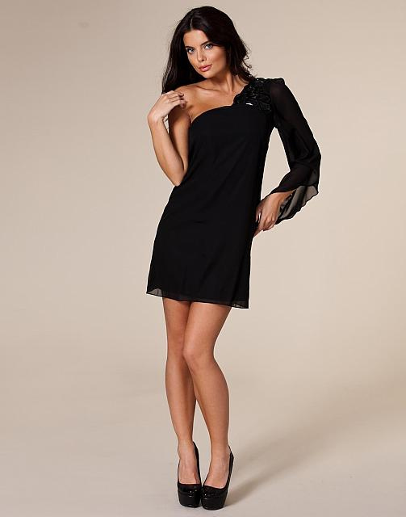

元素可以使用的顶部，底部，左侧和右侧属性定位。然而，这些属性无法工作，除非是先设定position属性。他们也有不同的工作方式，这取决于定位方法。
position 属性的四个值：
- static:HTML元素的默认值，即没有定位，元素出现在正常的流中。 静态定位的元素不会受到 top, bottom,
left, right影响。
- relative:相对定位元素的定位是相对其正常位置。
- fixed:元素的位置相对于浏览器窗口是固定位置。 即使窗口是滚动的它也不会移动：注意： Fixed
定位在 IE7 和 IE8 下需要描述 !DOCTYPE 才能支持. Fixed定位使元素的位置与文档流无关，因此不占据空间。
Fixed定位的元素和其他元素重叠。
- absolute:绝对定位的元素的位置相对于最近的已定位父元素，如果元素没有已定位的父元素，那么它的位置相对于:
测试fixed属性
我们不一样
注意: IE7 和 IE8 支持只有一个 !DOCTYPE 指定固定值.
Some text
Some text
Some text
Some text
Some text
Some text
Some text
Some text
Some text
Some text
Some text
Some text
Some text
Some text
Some text
Some text
测试relative属性
这是位于正常位置的标题
这个标题相对于其正常位置向左移动
这个标题相对于其正常位置向右移动
相对定位会按照元素的原始位置对该元素进行移动。
样式 "left:-20px" 从元素的原始左侧位置减去 20 像素。
样式 "left:20px" 向元素的原始左侧位置增加 20 像素。
这是一个绝对定位了的标题
用绝对定位,一个元素可以放在页面上的任何位置。标题下面放置距离左边的页面100 px和距离页面的顶部150 px的元素。.
重叠的元素:
元素的定位与文档流无关，所以它们可以覆盖页面上的其它元素
z-index属性指定了一个元素的堆叠顺序（哪个元素应该放在前面，或后面） 一个元素可以有正数或负数的堆叠顺序：
This is a heading

因为图像元素设置了 z-index 属性值为 -1, 所以它会显示在文字之后。